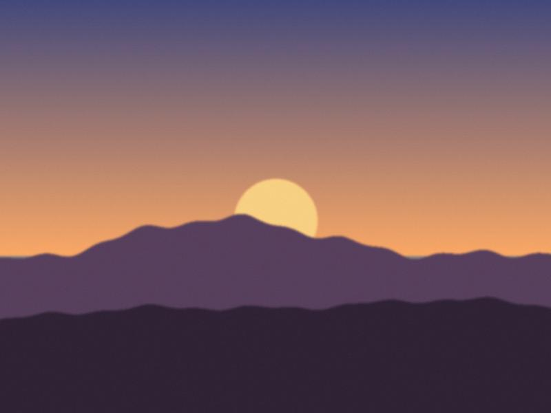
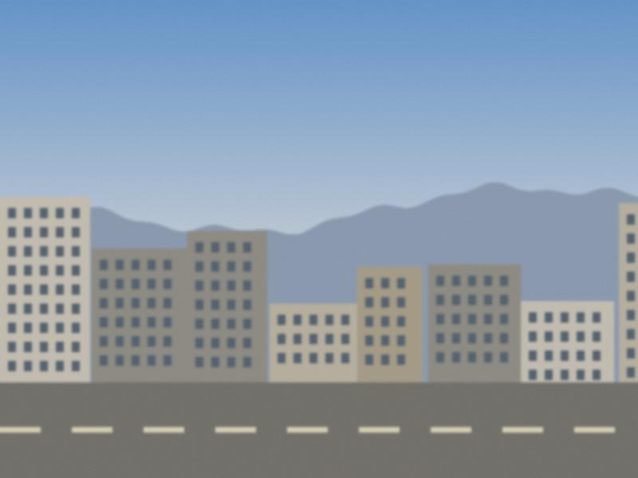
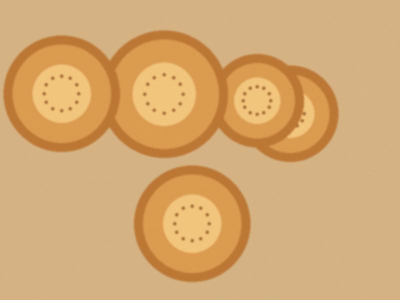
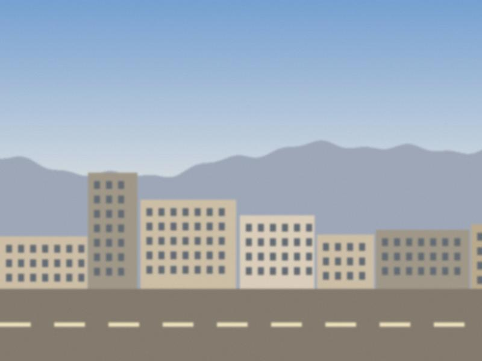

Archive for the ‘Church’ Category

The last Feast, from the window
Cathedral Hill in the evening of the Feast, from the window of the house. The last Feast from this window. All three…
♥ 23 · 2 comments
The bell
Today the great bell tolls for the names of 1937. We stood in the yard in the cold, the whole parish, while the names…
♥ 94 · 0 comments
The deacon's parish
Since the spring we go to the early Qurbana at the cathedral and sit in the same place on the left side, by the…
♥ 121 · 1 comments
Second Easter at home
Easter again at home. But this time the church was open for those who wished to stand in the courtyard with masks, and…
♥ 98 · 0 comments
Autumn without the pilgrims
After the Cross, no pilgrims also. The hill was almost empty after the Feast, even the sellers did not come. The one…
♥ 132 · 0 comments

Salima and the Archbishop
The square in front of the cathedral on the Feast, families standing apart. This year the Feast was almost empty. No…
♥ 46 · 1 comments

Easter at home
Kümöch and onion-skin eggs on the kitchen table, Easter morning. Easter without the church. The archeparchy asked…
♥ 100 · 0 comments

The Feast again
The lane in front of our house at 6 a.m., pilgrims already walking up. This year I went up. It cost me a plan: Dastan…
♥ 65 · 0 comments
Easter, the quiet one
Easter again, and the first time we did not take the children to the midnight liturgy. The little one has a cough.…
♥ 48 · 0 comments
Easter
The north door of the cathedral at midnight, candles in every hand. Christ is risen! The service began at midnight. In…
♥ 120 · 0 comments
After the Cross
The Cross is today, and after it the pilgrims go home and the town sleeps. I always feel a bit empty. Bread is back to…
♥ 67 · 0 comments
The Feast, from the window
Feast of St. Janyl. Every year I say: this year I will go up in the morning and stand properly. And every year the…
♥ 123 · 0 comments